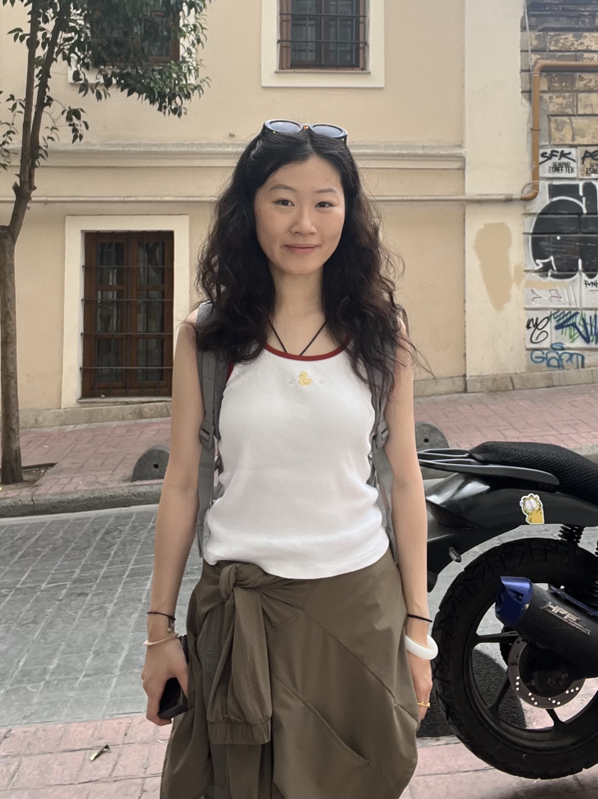

Ruoxi Li 李若曦
Interdisciplinary media artist with a background in engineering, working across photography, generative systems, immersive installations, and material practices including painting and craft. My work combines structural thinking with abstraction to build spaces for reflection and presence, exploring recurring patterns in nature and human life.